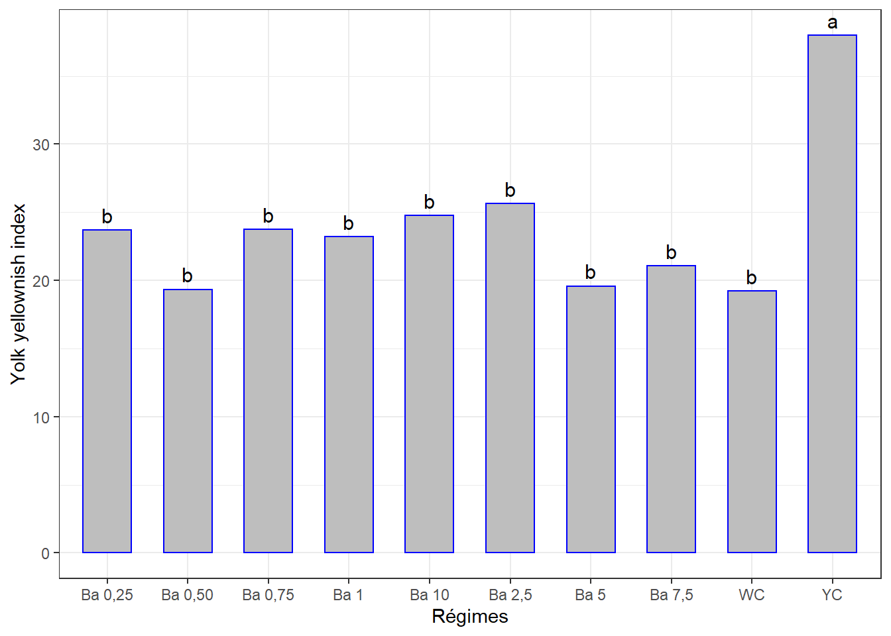

Chapitre 14 Indice B du jaune d’oeuf
La démarche sera la même que celle des chapitres précédents. Il se peut qu’il y ait moins de commentaires.
Même jeu de données oeuf.csv qui contient différentes mesures dont l’ évaluation de la couleur de l’intérieur de la coquille (Yellownish index) - indice B , mesurée en 5 séances. Mêmes traitements (régimes).
La question est de savoir si les différents régimes induisent des indices de coloration du jaune d’oeuf significativement différents avec le temps.
Mais chaque traitement n’ayant pas été appliqué sur tous les groupes d’oiseaux, l’ANOVA à mesures répétées ne pourrait pas être appliquée. Nous comparerons les effets des traitements séance par séance, puis à l’aide d’une figure on appréciera s’il y a une évolution de cet indice en fonction du temps.
14.1 Les données
bjau <- read_csv("data/oeuf.csv")
bjau <- bjau %>%
select(seance, regime, no_oeuf, indbjau) %>%
mutate(id = rep(1:30, 5), .before = 1) %>%
convert_as_factor(id, seance, regime)Le tableau a été préalablement structuré en format long en Excel. J’ai ajouté un identifiant (id) pour les échantillons des séances.
## Rows: 150
## Columns: 5
## $ id <fct> 1, 2, 3, 4, 5, 6, 7, 8, 9, 10, 11, 12, 13, 14, 15, 16, 17, 18,~
## $ seance <fct> seance 1, seance 1, seance 1, seance 1, seance 1, seance 1, se~
## $ regime <fct> "Ba 0,25", "Ba 0,25", "Ba 0,25", "Ba 0,50", "Ba 0,50", "Ba 0,5~
## $ no_oeuf <dbl> 1, 2, 3, 1, 2, 3, 1, 2, 3, 1, 2, 3, 1, 2, 3, 1, 2, 3, 1, 2, 3,~
## $ indbjau <dbl> 35.320, 37.990, 40.560, 40.430, 37.450, 43.180, 28.700, 37.870~14.2 Visualisation boxplots
bxp <- ggplot(bjau, aes(x = regime, y = indbjau, fill = regime)) +
geom_boxplot() +
facet_grid(seance ~ .) +
theme(axis.text.x = element_text(angle = 90, color = "bbjauk", vjust = 0.5, hjust = 1)) +
ylab("Yolk yellownish index") +
theme_bw()
bxp=> Variations notables entre les traitements pour certaines séances, surtout entre la séance 1 et les autres.
14.3 Détection des valeurs aberrantes extrêmes
## [1] seance regime id no_oeuf indbjau is.outlier is.extreme
## <0 rows> (or 0-length row.names)=> Pas de valeurs aberrantes extrêmes pour toutes les séances.
14.4 Conditions de l’ANOVA
14.4.1 Normalité
Si les données sont normalement distribuées, la p-value de Shapiro-Wilk doit être supérieure à 0,05 pour chaque régime.
## # A tibble: 5 x 4
## seance variable statistic p
## <fct> <chr> <dbl> <dbl>
## 1 seance 1 indbjau 0.644 0.000000264
## 2 seance 2 indbjau 0.900 0.00826
## 3 seance 3 indbjau 0.918 0.0232
## 4 seance 4 indbjau 0.886 0.00390
## 5 seance 5 indbjau 0.729 0.00000421=> Cette hypothèse n’est pas respectée pour toutes les séances. Mais on verra bien le comportement des résidus de l’ANOVA.
Créer des QQ-plots pour chaque point par séance
=> Mais selon les QQ-plots seule la séance 1 présente un problème majeur de normalité.
On explorera les données séance par séance pour palier au problème de normalité.
14.4.2 Homogénéité des variances
## # A tibble: 5 x 5
## seance df1 df2 statistic p
## <fct> <int> <int> <dbl> <dbl>
## 1 seance 1 9 20 1.55 0.198
## 2 seance 2 9 20 0.704 0.699
## 3 seance 3 9 20 0.828 0.599
## 4 seance 4 9 20 0.780 0.637
## 5 seance 5 9 20 0.985 0.481=> Toutes les valeurs p sont > 0.05 => toutes les variances sont homogènes.
14.5 ANOVA à 1 facteur séance par séance
14.5.1 Séance 1
## # A tibble: 6 x 7
## id seance regime no_oeuf indbjau is.outlier is.extreme
## <fct> <fct> <fct> <dbl> <dbl> <lgl> <lgl>
## 1 25 seance 1 YC 1 108. TRUE TRUE
## 2 26 seance 1 YC 2 85.4 TRUE TRUE
## 3 27 seance 1 YC 3 76.3 TRUE TRUE
## 4 28 seance 1 WC 1 81.0 TRUE TRUE
## 5 29 seance 1 WC 2 61.7 TRUE FALSE
## 6 30 seance 1 WC 3 156. TRUE TRUE=> Les observations des régimes au YC et WC sont supposées extrêmes par rapport aux autres. Est-ce qu’il faut les exclure ?
14.5.1.1 Le modèle
## Anova Table (Type II tests)
##
## Response: indbjau
## Sum Sq Df F value Pr(>F)
## regime 15601.1 9 5.9665 0.0004414 ***
## Residuals 5810.6 20
## ---
## Signif. codes: 0 '***' 0.001 '**' 0.01 '*' 0.05 '.' 0.1 ' ' 1La p-value < 0.01 => différence très significative entre les effets d’au moins 2 régimes sur cet indice à la séance 1.
## # A tibble: 1 x 3
## variable statistic p.value
## <chr> <dbl> <dbl>
## 1 residuals(lm1) 0.718 0.00000292=> Normalité pas respectée ! Même avec la transformation log().
## Anova Table (Type II tests)
##
## Response: log(indbjau)
## Sum Sq Df F value Pr(>F)
## regime 3.7637 9 11.698 3.4e-06 ***
## Residuals 0.7150 20
## ---
## Signif. codes: 0 '***' 0.001 '**' 0.01 '*' 0.05 '.' 0.1 ' ' 1## # A tibble: 1 x 3
## variable statistic p.value
## <chr> <dbl> <dbl>
## 1 residuals(lm1_log) 0.903 0.00974=> Alternative : Kruskal-Wallis et Dunn
Test de Kurskal-Wallis
## # A tibble: 1 x 6
## .y. n statistic df p method
## * <chr> <int> <dbl> <int> <dbl> <chr>
## 1 indbjau 30 21.5 9 0.0108 Kruskal-Wallis=> Différence significative entre les effets d’au moins deux régimes.
14.5.1.2 Comparaisons par paires
Test de Dunn
bjau1 %>%
dunn_test(indbjau ~ regime, p.adjust.method = "bonferroni") %>%
select(group1, group2, p, p.adj, p.adj.signif) %>%
filter(p.adj.signif != "ns")## # A tibble: 0 x 5
## # ... with 5 variables: group1 <chr>, group2 <chr>, p <dbl>, p.adj <dbl>,
## # p.adj.signif <chr>=> Paradoxalement ces comparaisons (avec la méthode non paramétrique) n’affichent aucune différence entre des régimes.
Je refais les comparaisons en supposant que toutes les comparaisons de l’ANOVA étaient remplies.
cm1 <- (SNK.test(lm1, "regime", group = TRUE))$groups %>%
mutate(regime = rownames(.)) %>%
select(regime, indbjau, groups) %>%
as_tibble()
cm1## # A tibble: 10 x 3
## regime indbjau groups
## <chr> <dbl> <chr>
## 1 WC 99.6 a
## 2 YC 89.8 a
## 3 Ba 10 44.8 b
## 4 Ba 0,50 40.4 b
## 5 Ba 1 39.8 b
## 6 Ba 5 39.2 b
## 7 Ba 2,5 38.3 b
## 8 Ba 0,25 38.0 b
## 9 Ba 7,5 34.1 b
## 10 Ba 0,75 33.3 bggplot(data = cm1, mapping = aes(x = regime, y = indbjau)) +
geom_bar(stat = "identity", color = "blue", fill = "grey", width = 0.6) +
#ylim(0, 100) +
geom_text(aes(label = groups), vjust = -0.5, size = 4) +
xlab("Régimes") + ylab("Yolk yellownish index") +
theme(axis.text.x = element_text(angle = 45, color = "black", vjust = 1, hjust = 1)) +
theme_bw()14.5.2 Séance 2
14.5.2.1 Le modèle
## # A tibble: 3 x 7
## id seance regime no_oeuf indbjau is.outlier is.extreme
## <fct> <fct> <fct> <dbl> <dbl> <lgl> <lgl>
## 1 25 seance 2 YC 1 40.6 TRUE FALSE
## 2 26 seance 2 YC 2 37.3 TRUE FALSE
## 3 27 seance 2 YC 3 36.0 TRUE FALSE=> Pas d’observation supossée extrême
## Anova Table (Type II tests)
##
## Response: indbjau
## Sum Sq Df F value Pr(>F)
## regime 816.65 9 8.0048 5.955e-05 ***
## Residuals 226.71 20
## ---
## Signif. codes: 0 '***' 0.001 '**' 0.01 '*' 0.05 '.' 0.1 ' ' 1La p-value est < 0.01 => différence très significative entre les effetes d’au moins 2 régimes.
## # A tibble: 1 x 3
## variable statistic p.value
## <chr> <dbl> <dbl>
## 1 residuals(lm2) 0.964 0.381=> Normalité Okay.
14.5.2.2 Comparaisons par paires
cm2 <- (SNK.test(lm2, "regime", group = TRUE))$groups %>%
mutate(regime = rownames(.)) %>%
select(regime, indbjau, groups) %>%
as_tibble()
cm2## # A tibble: 10 x 3
## regime indbjau groups
## <chr> <dbl> <chr>
## 1 YC 38.0 a
## 2 Ba 2,5 25.6 b
## 3 Ba 10 24.8 b
## 4 Ba 0,75 23.7 b
## 5 Ba 0,25 23.7 b
## 6 Ba 1 23.2 b
## 7 Ba 7,5 21.1 b
## 8 Ba 5 19.6 b
## 9 Ba 0,50 19.3 b
## 10 WC 19.2 bVisualisation des groupes
ggplot(data = cm2, mapping = aes(x = regime, y = indbjau)) +
geom_bar(stat = "identity", color = "blue", fill = "grey", width = 0.6) +
#ylim(0, 40) +
geom_text(aes(label = groups), vjust = -0.5, size = 4) +
xlab("Régimes") + ylab("Yolk yellownish index") +
theme(axis.text.x = element_text(angle = 45, color = "bbjauk", vjust = 1, hjust = 1)) +
theme_bw()
14.5.3 Séance 3
## # A tibble: 2 x 7
## id seance regime no_oeuf indbjau is.outlier is.extreme
## <fct> <fct> <fct> <dbl> <dbl> <lgl> <lgl>
## 1 25 seance 3 YC 1 38.5 TRUE FALSE
## 2 27 seance 3 YC 3 40.1 TRUE FALSE=> Pas d’observations aberrantes extrêmes.
14.5.3.1 Le modèle
## Anova Table (Type II tests)
##
## Response: indbjau
## Sum Sq Df F value Pr(>F)
## regime 946.48 9 10.819 6.27e-06 ***
## Residuals 194.40 20
## ---
## Signif. codes: 0 '***' 0.001 '**' 0.01 '*' 0.05 '.' 0.1 ' ' 1La p-value < 0.01 => Différence très significative entre les effetes d’au moins 2 régimes.
## # A tibble: 1 x 3
## variable statistic p.value
## <chr> <dbl> <dbl>
## 1 residuals(lm3) 0.947 0.138=> Normalité Okay.
14.5.3.2 Comparaisons par paires
cm3 <- (SNK.test(lm3, "regime", group = TRUE))$groups %>%
mutate(regime = rownames(.)) %>%
select(regime, indbjau, groups) %>%
as_tibble()
cm3## # A tibble: 10 x 3
## regime indbjau groups
## <chr> <dbl> <chr>
## 1 YC 37.5 a
## 2 Ba 10 27.4 b
## 3 Ba 5 25.6 bc
## 4 WC 23.6 bc
## 5 Ba 0,25 21.7 bc
## 6 Ba 2,5 20.4 bc
## 7 Ba 1 20.1 bc
## 8 Ba 0,50 19.9 bc
## 9 Ba 0,75 18.0 c
## 10 Ba 7,5 17.7 c… Et la visualisation graphique :
ggplot(data = cm3, mapping = aes(x = regime, y = indbjau)) +
geom_bar(stat = "identity", color = "blue", fill = "grey", width = 0.6) +
geom_text(aes(label = groups), vjust = -0.5, size = 4) +
#ylim(0, 40) +
xlab("Régimes") + ylab("Log(Yolk yellownish index)") +
theme(axis.text.x = element_text(angle = 45, color = "bbjauk", vjust = 1, hjust = 1)) +
theme_bw()14.5.4 Séance 4
## # A tibble: 2 x 7
## id seance regime no_oeuf indbjau is.outlier is.extreme
## <fct> <fct> <fct> <dbl> <dbl> <lgl> <lgl>
## 1 25 seance 4 YC 1 36.1 TRUE FALSE
## 2 27 seance 4 YC 3 37.2 TRUE FALSE14.5.4.1 Le modèle
## Anova Table (Type II tests)
##
## Response: indbjau
## Sum Sq Df F value Pr(>F)
## regime 757.53 9 9.9302 1.212e-05 ***
## Residuals 169.52 20
## ---
## Signif. codes: 0 '***' 0.001 '**' 0.01 '*' 0.05 '.' 0.1 ' ' 1La p-value < 0.01 => différence très significative entre les effets d’au moins 2 régimes.
## # A tibble: 1 x 3
## variable statistic p.value
## <chr> <dbl> <dbl>
## 1 residuals(lm4) 0.960 0.306=> Normalité Okay.
14.5.4.2 Comparaisons par paires
cm4 <- (SNK.test(lm4, "regime", group = TRUE))$groups %>%
mutate(regime = rownames(.)) %>%
select(regime, indbjau, groups) %>%
as_tibble()
cm4## # A tibble: 10 x 3
## regime indbjau groups
## <chr> <dbl> <chr>
## 1 YC 34.9 a
## 2 Ba 10 25.0 b
## 3 Ba 2,5 23.9 bc
## 4 Ba 1 23.3 bc
## 5 Ba 0,50 22.5 bc
## 6 Ba 7,5 22.4 bc
## 7 Ba 0,75 20.0 bc
## 8 Ba 5 17.6 bc
## 9 Ba 0,25 17.5 bc
## 10 WC 16.7 cVisualisation des groupes
ggplot(data = cm4, mapping = aes(x = regime, y = indbjau)) +
geom_bar(stat = "identity", color = "blue", fill = "grey", width = 0.6) +
#ylim(0, 40) +
geom_text(aes(label = groups), vjust = -0.5, size = 4) +
xlab("Régimes") + ylab("Yolk yellownish index") +
theme(axis.text.x = element_text(angle = 45, color = "bbjauk", vjust = 1, hjust = 1)) +
theme_bw()14.5.5 Séance 5
## # A tibble: 3 x 7
## id seance regime no_oeuf indbjau is.outlier is.extreme
## <fct> <fct> <fct> <dbl> <dbl> <lgl> <lgl>
## 1 25 seance 5 YC 1 45.9 TRUE TRUE
## 2 26 seance 5 YC 2 43.9 TRUE TRUE
## 3 27 seance 5 YC 3 44.9 TRUE TRUE=> Le mais jaune ! Mais on peut pas exclure un régime de l’analyse !
14.5.5.1 Le modèle
## Anova Table (Type II tests)
##
## Response: indbjau
## Sum Sq Df F value Pr(>F)
## regime 2138.81 9 24.171 7.414e-09 ***
## Residuals 196.63 20
## ---
## Signif. codes: 0 '***' 0.001 '**' 0.01 '*' 0.05 '.' 0.1 ' ' 1La p-value < 0.01 => différence très significative entre les effets d’au moins 2 régimes.
## # A tibble: 1 x 3
## variable statistic p.value
## <chr> <dbl> <dbl>
## 1 residuals(lm5) 0.973 0.639=> Normalité Okay.
14.5.5.2 Comparaisons par paires
cm5 <- (SNK.test(lm5, "regime", group = TRUE))$groups %>%
mutate(regime = rownames(.)) %>%
select(regime, indbjau, groups) %>%
as_tibble()
cm5## # A tibble: 10 x 3
## regime indbjau groups
## <chr> <dbl> <chr>
## 1 YC 44.9 a
## 2 Ba 1 20.5 b
## 3 Ba 2,5 20.4 b
## 4 Ba 5 19.5 b
## 5 Ba 0,25 19.1 b
## 6 Ba 0,50 18.7 b
## 7 WC 18.7 b
## 8 Ba 0,75 16.8 b
## 9 Ba 7,5 15.2 b
## 10 Ba 10 12.4 bggplot(data = cm5, mapping = aes(x = regime, y = indbjau)) +
geom_bar(stat = "identity", color = "blue", fill = "grey", width = 0.6) +
#ylim(0, 40) +
geom_text(aes(label = groups), vjust = -0.5, size = 4) +
xlab("Régimes") + ylab("Yolk yellownish index") +
theme(axis.text.x = element_text(angle = 45, color = "bbjauk", vjust = 1, hjust = 1)) +
theme_bw()14.6 Évolution de l’indice B du jaune d’oeuf selon le régime au cours du temps
14.6.1 Sommaire
bjau_ic <- summarySE(bjau,
measurevar = "indbjau",
groupvars = c("seance", "regime"),
na.rm = TRUE)
bjau_ic## seance regime N indbjau sd se ci
## 1 seance 1 Ba 0,25 3 37.95667 2.6201590 1.5127495 6.5088359
## 2 seance 1 Ba 0,50 3 40.35333 2.8657692 1.6545526 7.1189654
## 3 seance 1 Ba 0,75 3 33.28500 4.5850000 2.6471510 11.3897714
## 4 seance 1 Ba 1 3 39.84333 8.8003258 5.0808704 21.8612211
## 5 seance 1 Ba 10 3 44.75000 0.0000000 0.0000000 0.0000000
## 6 seance 1 Ba 2,5 3 38.34000 4.0487899 2.3375700 10.0577518
## 7 seance 1 Ba 5 3 39.25000 3.9648960 2.2891338 9.8493476
## 8 seance 1 Ba 7,5 3 34.06333 1.0813109 0.6242952 2.6861253
## 9 seance 1 WC 3 99.60000 49.9484444 28.8377478 124.0788144
## 10 seance 1 YC 3 89.84000 16.2361202 9.3739284 40.3327585
## 11 seance 2 Ba 0,25 3 23.68333 3.7359916 2.1569758 9.2807177
## 12 seance 2 Ba 0,50 3 19.33333 3.8411110 2.2176664 9.5418486
## 13 seance 2 Ba 0,75 3 23.74667 0.7769384 0.4485656 1.9300221
## 14 seance 2 Ba 1 3 23.19667 1.8306374 1.0569190 4.5475554
## 15 seance 2 Ba 10 3 24.75000 4.1117879 2.3739419 10.2142475
## 16 seance 2 Ba 2,5 3 25.64000 3.3438152 1.9305526 8.3064974
## 17 seance 2 Ba 5 3 19.58000 4.3527922 2.5130858 10.8129353
## 18 seance 2 Ba 7,5 3 21.06333 5.2843763 3.0509361 13.1271186
## 19 seance 2 WC 3 19.22333 0.2663331 0.1537675 0.6616082
## 20 seance 2 YC 3 37.99000 2.3785500 1.3732565 5.9086457
## 21 seance 3 Ba 0,25 3 21.65667 2.1350020 1.2326440 5.3036389
## 22 seance 3 Ba 0,50 3 19.91667 6.2236993 3.5932545 15.4605262
## 23 seance 3 Ba 0,75 3 18.04667 4.9289485 2.8457297 12.2441869
## 24 seance 3 Ba 1 3 20.09333 2.9372493 1.6958217 7.2965317
## 25 seance 3 Ba 10 3 27.45000 0.0000000 0.0000000 0.0000000
## 26 seance 3 Ba 2,5 3 20.36000 0.4900000 0.2829016 1.2172275
## 27 seance 3 Ba 5 3 25.62500 3.1550000 1.8215401 7.8374545
## 28 seance 3 Ba 7,5 3 17.73333 0.6384617 0.3686160 1.5860268
## 29 seance 3 WC 3 23.55000 0.0000000 0.0000000 0.0000000
## 30 seance 3 YC 3 37.48667 3.2222094 1.8603435 8.0044119
## 31 seance 4 Ba 0,25 3 17.53667 0.6107645 0.3526251 1.5172232
## 32 seance 4 Ba 0,50 3 22.49667 1.4846324 0.8571529 3.6880313
## 33 seance 4 Ba 0,75 3 19.97000 2.4421916 1.4100000 6.0667403
## 34 seance 4 Ba 1 3 23.27000 6.5652723 3.7904617 16.3090404
## 35 seance 4 Ba 10 3 25.04000 2.7592028 1.5930265 6.8542397
## 36 seance 4 Ba 2,5 3 23.87333 3.3629947 1.9416259 8.3541420
## 37 seance 4 Ba 5 3 17.55000 0.0000000 0.0000000 0.0000000
## 38 seance 4 Ba 7,5 3 22.39000 2.1374518 1.2340583 5.3097245
## 39 seance 4 WC 3 16.69667 0.8421599 0.4862213 2.0920412
## 40 seance 4 YC 3 34.93000 2.9859839 1.7239586 7.4175953
## 41 seance 5 Ba 0,25 3 19.06000 3.0174990 1.7421538 7.4958830
## 42 seance 5 Ba 0,50 3 18.72667 3.1972853 1.8459535 7.9424970
## 43 seance 5 Ba 0,75 3 16.80333 5.9807134 3.4529665 14.8569158
## 44 seance 5 Ba 1 3 20.48000 1.7754154 1.0250366 4.4103765
## 45 seance 5 Ba 10 3 12.36000 0.0000000 0.0000000 0.0000000
## 46 seance 5 Ba 2,5 3 20.39333 2.5579940 1.4768585 6.3544094
## 47 seance 5 Ba 5 3 19.48667 3.0675126 1.7710292 7.6201236
## 48 seance 5 Ba 7,5 3 15.21333 0.9700687 0.5600694 2.4097843
## 49 seance 5 WC 3 18.67667 4.7013757 2.7143405 11.6788646
## 50 seance 5 YC 3 44.90500 1.0350000 0.5975575 2.571082514.6.2 Visualisation
ggplot(bjau_ic, aes(x = seance, y = indbjau, colour = regime, group = regime)) +
geom_line(size = 1) +
geom_point(size = 2) +
ylab("Yolk yellownish index") +
theme_bw()
Décroissance globalement d’une séance à l’autre. Vous jugerez.
Nous savons par les analyses pour chaque séance plus haut, que
- séance 1 : il existe des différences d’effet entre les régimes (en négligeant le non respect des conditions de l’ANOVA, puisque le non paramétrique ne fonctionne pas non plus)
- séance 2 : il existe des différences d’effet entre les régimes
- séance 3 : il existe des différences d’effet entre les régimes
- séance 4 : il existe des différences d’effet entre les régimes
- séance 5 : il existe des différences d’effet entre les régimes
avec en général le mais jaune qui se démarque des autres.
Puisque les données ne répondent pas aux conditions pour évaluer les effets des régimes au cours du temps, on négligera l’effet des régimes pour évaluer globalement l’effet du temps sur cet indice.
On pourrait se demander si les indices B mesurés sur l’ensemble des sujets sont significativement différents d’une séance à l’autre (c’est-à-dire avec le temps).
14.6.3 Effet du temps
14.6.3.1 boxplots, facteur temps
14.6.3.2 Valeurs aberrantes, facteur temps
bjau <- bjau %>% mutate(id2 = 1:nrow(.), .before = 1)
bjau_out <- bjau %>%
group_by(seance) %>%
identify_outliers(indbjau)
bjau_out## # A tibble: 16 x 8
## seance id2 id regime no_oeuf indbjau is.outlier is.extreme
## <fct> <int> <fct> <fct> <dbl> <dbl> <lgl> <lgl>
## 1 seance 1 25 25 YC 1 108. TRUE TRUE
## 2 seance 1 26 26 YC 2 85.4 TRUE TRUE
## 3 seance 1 27 27 YC 3 76.3 TRUE TRUE
## 4 seance 1 28 28 WC 1 81.0 TRUE TRUE
## 5 seance 1 29 29 WC 2 61.7 TRUE FALSE
## 6 seance 1 30 30 WC 3 156. TRUE TRUE
## 7 seance 2 55 25 YC 1 40.6 TRUE FALSE
## 8 seance 2 56 26 YC 2 37.3 TRUE FALSE
## 9 seance 2 57 27 YC 3 36.0 TRUE FALSE
## 10 seance 3 85 25 YC 1 38.5 TRUE FALSE
## 11 seance 3 87 27 YC 3 40.1 TRUE FALSE
## 12 seance 4 115 25 YC 1 36.1 TRUE FALSE
## 13 seance 4 117 27 YC 3 37.2 TRUE FALSE
## 14 seance 5 145 25 YC 1 45.9 TRUE TRUE
## 15 seance 5 146 26 YC 2 43.9 TRUE TRUE
## 16 seance 5 147 27 YC 3 44.9 TRUE TRUE=> 5 observations aberrantes extrêmes. Non exclues.
14.6.3.3 Homogénéité des variances et ANOVA, facteur temps
Les autres conditions ont déjà été vérifiées.
## ANOVA Table (type III tests)
##
## Effect DFn DFd F p p<.05 ges
## 1 seance 1.2 34.7 32.484 5.83e-07 * 0.401=> C’est la p-value qui nous intéresse et elle est < 0.01 => Différence très significative entre certaines séances.
14.6.3.4 Comparaisons par paires, facteur temps
tph <- bjau %>%
pairwise_t_test(indbjau ~ seance,
paired = TRUE,
p.adjust.method = "bonferroni")
tph %>%
select(group1, group2, p, p.adj, p.adj.signif)## # A tibble: 10 x 5
## group1 group2 p p.adj p.adj.signif
## <chr> <chr> <dbl> <dbl> <chr>
## 1 seance 1 seance 2 0.00000687 0.0000687 ****
## 2 seance 1 seance 3 0.00000198 0.0000198 ****
## 3 seance 1 seance 4 0.00000435 0.0000435 ****
## 4 seance 1 seance 5 0.000000245 0.00000245 ****
## 5 seance 2 seance 3 0.543 1 ns
## 6 seance 2 seance 4 0.111 1 ns
## 7 seance 2 seance 5 0.009 0.094 ns
## 8 seance 3 seance 4 0.45 1 ns
## 9 seance 3 seance 5 0.04 0.397 ns
## 10 seance 4 seance 5 0.154 1 ns